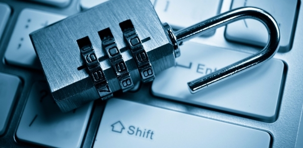

Захист персональних даних

Захист персональних даних є важливою темою в наш час, коли інтернет і технології стали необхідними частинами нашого життя. Персональні дані - це будь-яка інформація про фізичну особу, яка може бути використана для її ідентифікації. Це можуть бути імена, адреси, номери телефонів, адреси електронної пошти, фотографії, банківські реквізити та інші дані.
Захист персональних даних включає в себе заходи, які забезпечують конфіденційність та безпеку цих даних. Це означає, що персональні дані повинні бути збережені в безпечному місці та доступ до них повинен бути обмежений лише тим, хто має право на доступ до цих даних.
Для захисту персональних даних існують різні методи та технології. Один з найбільш ефективних методів - це шифрування даних. Шифрування даних означає перетворення чіткого тексту на незрозумілий для інших код. Це забезпечує конфіденційність даних, оскільки тільки особа з правом доступу може розшифрувати дані.
Інші методи захисту персональних даних включають в себе використання паролів, біометричних даних (наприклад, відбитків пальців), двофакторної аутентифікації та захисту мережі.
Крім технічних заходів, важливо також дотримуватись правил захисту персональних даних. Це означає, що необхідно обмежувати доступ до своїх персональних даних, не передавати їх третім особам без необхідності та використовувати надійні паролі для своїх облікових записів.
У багатьох країнах існують закони, які регулюють захист персональних даних. Наприклад, в Європейському Союзі існує загальний регламент про захист персональних даних (GDPR), який вимагає від компаній та організацій дотримуватись певних правил щодо збору, збереження та обробки персональних даних.
У підсумку, захист персональних даних є важливою темою для всіх користувачів інтернету та технологій. Необхідно дотримуватись правил захисту персональних даних та використовувати надійні методи технічного захисту для забезпечення конфіденційності та безпеки цих даних. Додатково можна відзначити, що захист персональних даних має важливе значення не лише для індивідуальних користувачів, але й для компаній та організацій. Захист персональних даних клієнтів та співробітників є необхідною вимогою для будь-якої серйозної компанії, оскільки порушення цих правил може призвести до втрати довіри та репутації, а також до фінансових втрат у разі штрафів за порушення законодавства.
Також важливо пам'ятати, що захист персональних даних повинен бути забезпечений на всіх етапах їх обробки - від збору та збереження до передачі та видалення. Крім того, необхідно регулярно оновлювати методи захисту персональних даних, оскільки з часом з'являються нові загрози та вразливості.
Нарешті, важливо знати свої права щодо захисту персональних даних та вміти їх захищати. Це означає, що користувачі мають право на доступ до своїх персональних даних, право на їх виправлення та видалення, а також право на обмеження їх обробки. Знання своїх прав та вміння їх захищати допоможуть зберегти конфіденційність та безпеку своїх персональних даних.